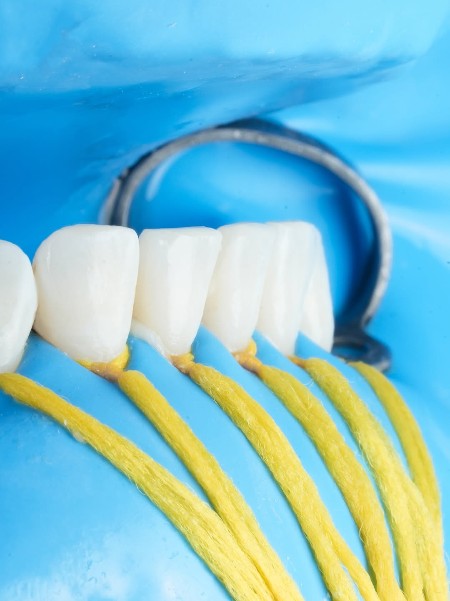
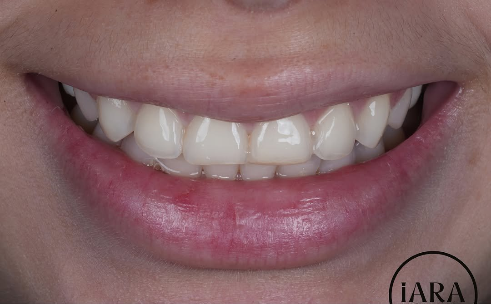
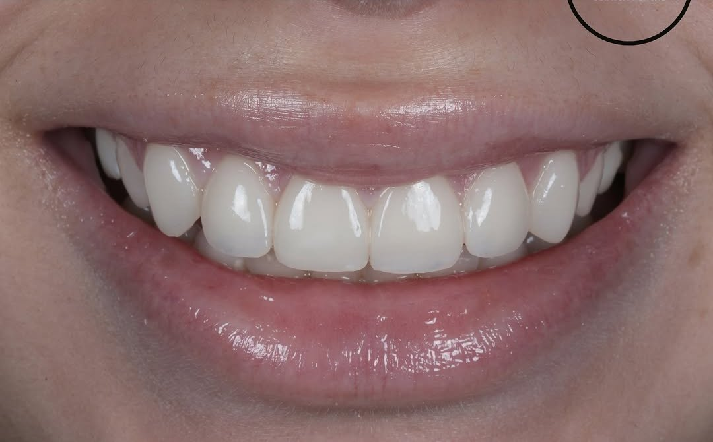

Revisamos tu boca, tomamos fotografías y, si hace falta, radiografías. Sales con un diagnóstico y un plan de tratamiento explicado por el especialista.
Especialistas en cada diente
IARA es una clínica dental en Suba, Bogotá. Implantes con cirugía guiada, rehabilitación y estética, cada uno en manos del especialista de esa área.
Agendar valoración
Ver casos reales
Carrera 58 #128A-03, Suba

Del sillón al espejo
Cada implante, cada resina y cada sonrisa se planea con el especialista de su área y se documenta en cada etapa. Así se ve un tratamiento en IARA.


Forma, largo y color de los dientes anteriores, planeados con fotografía antes de tocar un solo diente.
Afuera, el antesEn el espejo, el después
Casos reales
Fotografía clínica del equipo IARA, publicada en @iaraclinica.
De cerca
Cada caso se documenta antes, durante y después del tratamiento.
Diente 26: de amalgama a resina, caso IARA
Implantes con cirugía guiada
El implante se planea en tu tomografía antes de la cita y llega a su lugar a través de una guía hecha para tu boca. Suele significar menos tiempo en el sillón y menos inflamación después.
Escanear
Tomografía 3D y escaneo de tu boca: hueso, encía y dientes reunidos en un solo archivo.
Planear
En el software se deciden ángulo, profundidad y posición del implante, pensando ya en la corona final.
Colocar
Una guía impresa lleva el implante exactamente a ese punto, en una cirugía corta y con mínima apertura.
Un equipo, una sola mirada
Especialistas por área
Implantología, rehabilitación, endodoncia, ortodoncia y estética. Cada parte de tu tratamiento la hace quien se formó para ella, y el caso se revisa en equipo.
Fotografía en cada paso
El área de estética y restauración la dirige el Dr. Rafael Osma, que documenta cada caso con fotografía clínica para planear, mostrarte el avance y medir el resultado.
Reseñas en Google
Calificación: 4,9 de 5
74 reseñas de pacientes en Google, 73 de ellas con cinco estrellas.
Lo que más mencionan
- Confianza7 reseñas
- Trabajo6 reseñas
- Feliz5 reseñas
- Diseño4 reseñas
- Seguridad3 reseñas
- Perfección3 reseñas
- Integral3 reseñas
Palabras que Google identifica en las reseñas de iARA, con el número de reseñas que las usan.
Lo que escriben los pacientes
Reseñas y datos de Google Maps
Preguntas frecuentes
Se hace con anestesia local. Como el implante se planea antes en la tomografía, la cirugía es más corta y abre menos la encía, así que la inflamación después suele ser menor.
No siempre. Se retiran cuando causan dolor, infecciones, caries en el diente vecino o no tienen espacio para salir. En la valoración lo revisamos con radiografía.
El café, el té y el vino tiñen el esmalte con los años. Un aclaramiento con el protocolo adecuado devuelve el tono sin sensibilidad fuerte, y te explicamos cómo mantenerlo.
Estamos en la Carrera 58 #128A-03, en Suba, Bogotá. Escríbenos por WhatsApp al 314 775 2016 y te confirmamos el horario de tu valoración.
Cómo llegar
Carrera 58 #128A-03
Suba, Bogotá
Lunes a viernes, 8:00 a 18:00
Sábados, 8:00 a 16:00